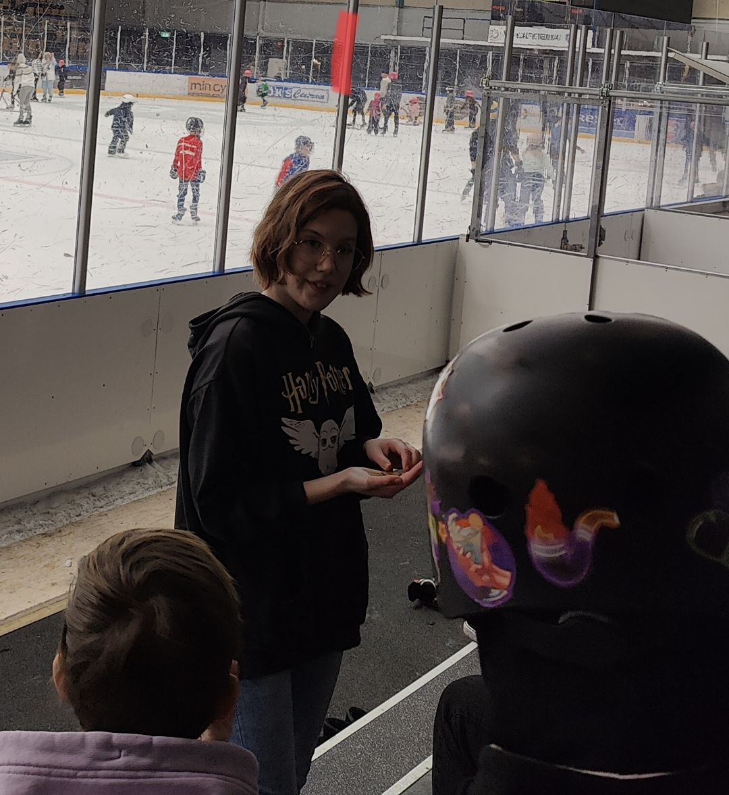
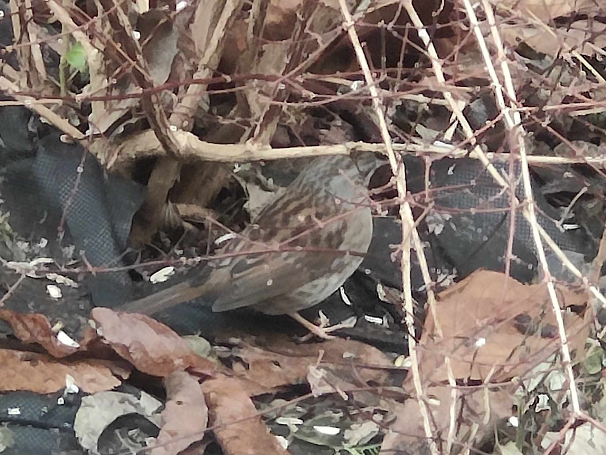
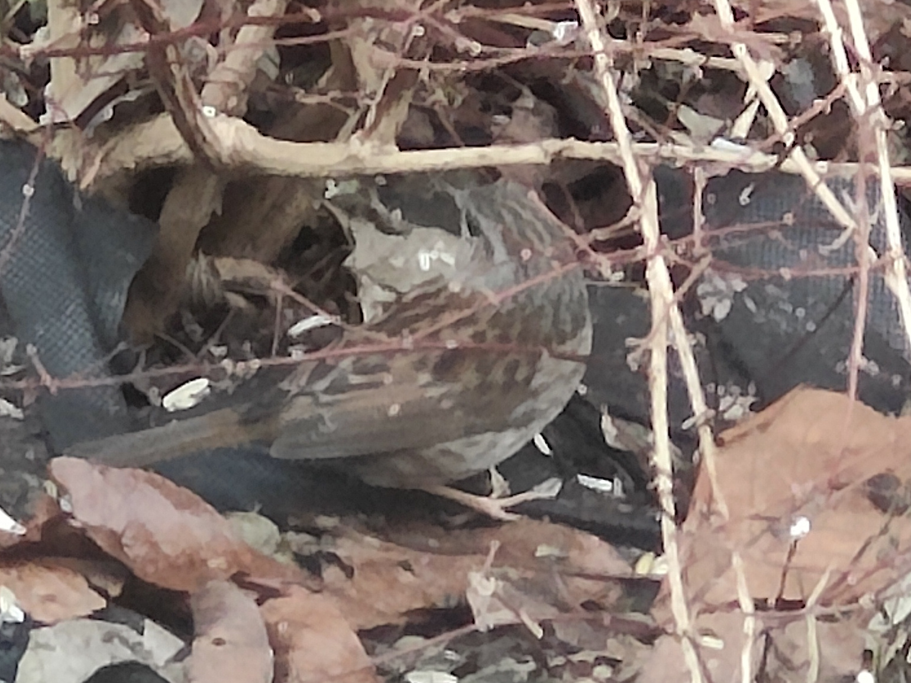
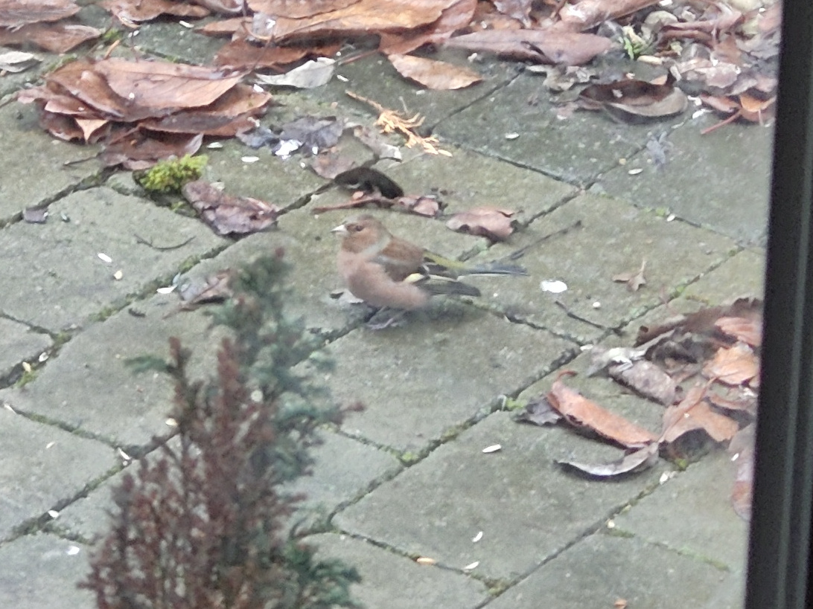
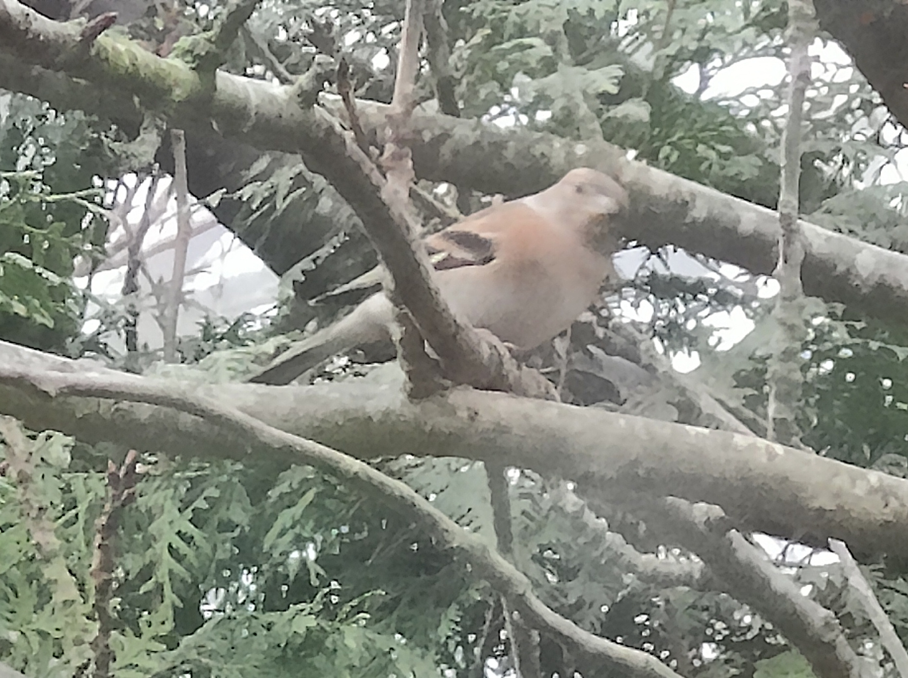
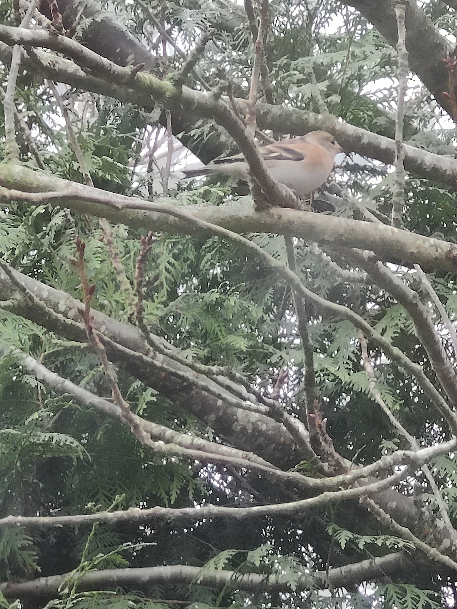

Ha en bra måndag!
Under tiden anländer en gäst.
Det är Lotta som försöker
undkomma storstadens stress
"Välkommen" säger Bengt
"Jag skulle vilja checka in" säger Lotta
Bengt ger henne en nyckel.
"Guuu, vilket charmigt rum!"
utropar Lotta
"Så skönt det ska bli att
koppla av här över jul!"
Ellinor hade terminsavslutning
för sin Rollerderby
på Helsingborgs ishall
Järnsparv
Järnsparv
Bergfink
Bergfink
Bergfink
